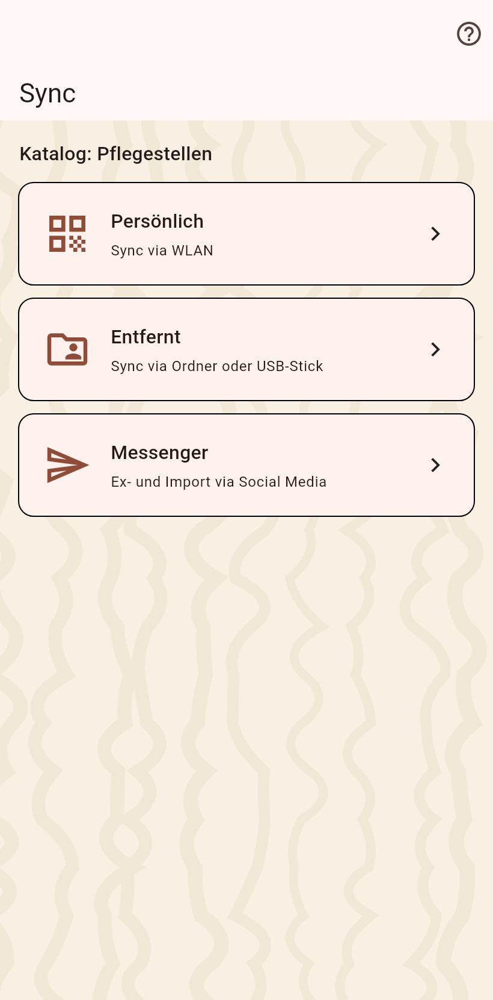
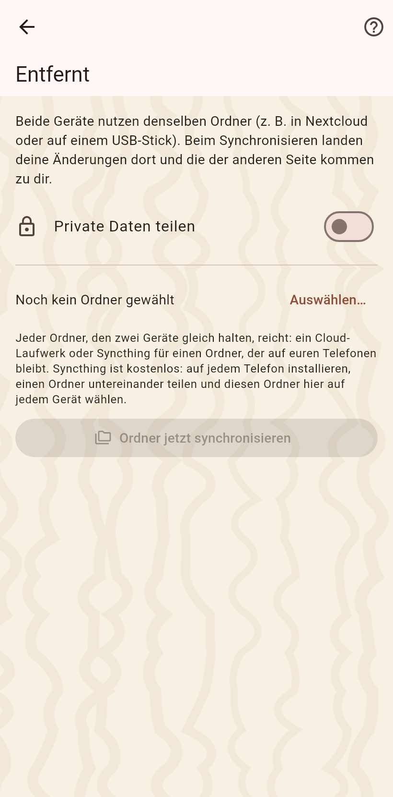

1. Die Abgleichseite
Drei Wege: persönlich, ein gemeinsamer Ordner, ein Bündel. Der gemeinsame Ordner für Partner, die du nicht triffst.

2. Der Ordner
Wähle den Ordner auf einem Cloud-Client oder einem USB-Stick; das Telefon gibt ihn einmal frei. Von da an sagt die Wartezeile oben, wessen Änderungen warten, ein Tipp gleicht ab, und der Schalter führt von selbst zusammen. Mach dasselbe auf dem Gerät des Partners mit demselben Ordner.
